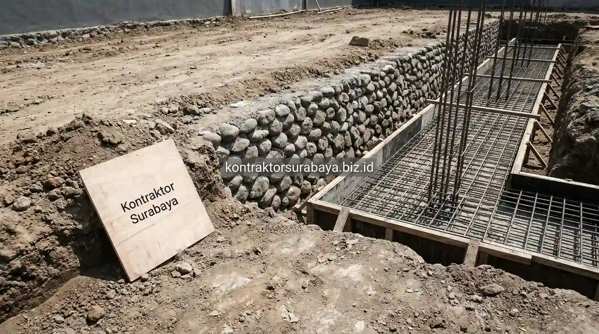

Membangun rumah di wilayah Gresik seperti kawasan Driyorejo, Menganti, Cerme, Kebomas, Manyar, hingga Duduksampeyan memerlukan pertimbangan struktur teknik sipil yang berbeda dibanding wilayah dengan kondisi tanah seragam. Karakteristik geologis Gresik yang memadukan bukit kapur tandus di sisi barat dan endapan aluvium/bekas tambak berlumpur di sisi pesisir menuntut perhitungan beton bertulang dan sistem pondasi yang presisi agar bangunan tidak mengalami amblas atau dinding retak struktur di masa depan.
1. Mengapa Kondisi Tanah di Gresik Memengaruhi Pilihan Struktur Rumah
Wilayah Gresik memiliki karakter tanah yang cukup beragam, mulai dari tanah keras di beberapa kawasan perumahan hingga tanah berlumpur di area yang lebih dekat dengan garis pantai.
Perbedaan ini membuat kedalaman dan jenis pondasi yang cocok untuk satu lokasi belum tentu sesuai untuk lokasi lain, meski jaraknya berdekatan. Pengecekan kondisi tanah (uji sondir) di awal proyek membantu menentukan jenis pondasi yang paling sesuai sebelum tahap pengerjaan struktur bawah (sub-structure) dimulai, sehingga terhindar dari pemborosan biaya atau risiko kegagalan struktur.
2. Jenis Pondasi yang Umum Digunakan untuk Rumah di Gresik
Beberapa jenis pondasi berikut umum diterapkan pada proyek rumah tinggal di wilayah Gresik, tergantung hasil pengecekan daya dukung tanah di lokasi:
- Pondasi Batu Kali Menerus: Cocok untuk kondisi tanah darat keras dan stabil (seperti perbukitan Kebomas) untuk memikul beban rumah 1 lantai.
- Pondasi Tapak (Foot Plat / Cakar Ayam): Diterapkan pada rumah dua lantai dengan beban titik kolom terpusat di kawasan tanah berdaya dukung sedang.
- Pondasi Strauss Pile (Bor Manual): Menjangkau lapisan tanah keras di kedalaman 4-8 meter pada area tanah lempung ekspansif (tanah gerak).
- Pondasi Mini Pile (Tiang Pancang Mini): Solusi mutlak untuk kawasan bekas tambak atau tanah pesisir Manyar dengan lapisan lumpur tebal.

3. Spesifikasi Beton Bertulang yang Direkomendasikan untuk Rumah Tinggal
Struktur beton bertulang pada rumah tinggal umumnya menggunakan mutu beton K-225 hingga K-250 untuk elemen sloof, kolom, dan balok, dengan besi tulangan berdiameter 10-13 mm tergantung bentang dan beban yang dipikul.
Pemilihan mutu beton yang terlalu rendah dapat memengaruhi daya tahan struktur dalam jangka panjang, sementara mutu yang berlebihan tanpa perhitungan yang tepat hanya menambah biaya tanpa manfaat struktural yang sepadan. Di Kontraktor Surabaya, kami selalu menggunakan besi beton ulir berstandar SNI murni (bukan besi banci) serta pasir Lumajang berkualitas tinggi yang bebas lumpur untuk memastikan daya rekat beton maksimal.
4. Bagaimana Proses Curing Memengaruhi Kekuatan Beton?
Proses curing atau perawatan beton setelah pengecoran tetap memengaruhi kekuatan akhir struktur meski campuran material sudah sesuai spesifikasi.
Beton yang tidak dijaga kelembapannya pada beberapa hari pertama setelah pengecoran cenderung mengalami retak rambut lebih cepat akibat penguapan air yang terlalu drastis di bawah terik matahari Gresik. Penyiraman rutin minimal 2 kali sehari atau penutupan permukaan plat dak beton dengan karung basah/plastik curing selama 7-14 hari pertama menjadi SOP wajib yang kami terapkan untuk mencapai kuat tekan beton 100%.
5. Kesalahan Umum saat Membangun Rumah di Wilayah Gresik
Beberapa kesalahan yang sering ditemui pada proyek rumah di wilayah Gresik meliputi:
- Menyamaratakan Pondasi Tanpa Uji Tanah: Memakai pondasi batu kali dangkal di tanah bekas urukan tambak yang memicu amblasnya sudut bangunan.
- Mengurangi Diameter Besi Tulangan: Menukar besi 12 mm ulir dengan 10 mm polos demi menekan budget yang mengakibatkan balok lantai 2 melendut.
- Melepas Bekisting Cor Terlalu Cepat: Membuka tiang perancah (scaffolding) balok sebelum beton berumur 21-28 hari sehingga struktur retak.
- Tidak Memasang Lapisan Selimut Beton (Decking): Besi tulangan menempel langsung pada bekisting sehingga mudah berkarat akibat rembesan air tanah.
6. Faktor Biaya Material Beton Bertulang di Gresik
Biaya material beton bertulang dapat bervariasi tergantung jenis pondasi yang dipilih, kedalaman galian tanah keras, serta aksesibilitas truk molen (ready mix) ke lokasi kavling.
Proyek di area yang membutuhkan pondasi dalam (strauss pile) akibat lapisan tanah lunak umumnya memerlukan alokasi anggaran struktur berkisar 35-45% dari total biaya bangun rumah. Melakukan konsultasi dan survei tanah sejak dini memungkinkan penyusunan Rencana Anggaran Biaya (RAB) yang presisi tanpa ada pembengkakan biaya tak terduga saat proyek berlangsung.
"Kekokohan sebuah rumah tidak ditentukan oleh megahnya cat eksterior, melainkan oleh perhitungan jujur mutu beton bertulang dan ketepatan pondasi di dalam tanah."
Konsultasikan kebutuhan struktur dan bangun rumah Anda bersama tim profesional. Lihat hasil pengerjaan proyek kami pada galeri proyek kami, atau pelajari rincian layanan pada halaman kontraktor rumah profesional.